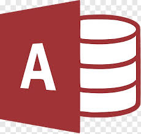

Core Skills & Tools
 SQL
SQL- Python
- Power BI
 Tableau
Tableau- Excel
- Google Sheets
- MS Word
- MS Power Point
-  MS Access
Data Analyst | Business Analyst
SQL | Power BI | Advance Excel | Looker | Python
ravikumar.inbh@gmail.com | +91 8851015209 | New Delhi, IN
I am Ravi Ranjan Kumar, a dedicated Data Analyst with over three years of professional experience in the field of data analytics, business intelligence, and financial analysis. With a solid academic foundation—a Bachelor's degree in Economics (Hons.) from Babasaheb Bhimrao Ambedkar Bihar University—I bring both analytical thinking and practical business acumen to the table. My expertise lies in tools like SQL, Power BI, Tableau, and Python (Pandas, NumPy), and I am highly proficient in Excel, SQL Server, and basic SSIS. I have a strong command of data management, visualization, and automation processes that drive efficiency and support data-driven decision-making.
My professional journey has taken me through diverse roles and industries. At Innovate Insights Consultancy Pvt. Ltd. (client: Paytm), I worked as a Data Analyst, where I managed large-scale data operations using SQL Server, Excel, and Power BI. I led financial reconciliation initiatives to align internal and bank records, developed automation solutions for ingestion via SFTP and S3, and built analytical dashboards that improved visibility into financial transactions. Prior to this, I served as a Business Analyst at Maral Overseas Ltd., where I conducted stock and WIP analysis, streamlined inventory processes, and utilized Power BI to deliver real-time operational and financial insights. My work significantly improved forecasting accuracy and dispatch monitoring through structured SQL reporting.
Earlier in my career, I worked at IIFL Samasta as a Branch Credit Manager, where I handled financial data verification, credit risk assessment, and optimized loan disbursement and collection strategies. This role helped me develop a meticulous attention to detail and a deep understanding of financial compliance.
Throughout my career, I’ve contributed to several data-driven projects, including analyses of customer loans, e-commerce sales (Blinkit), music trends (Spotify), and mobile sales. These projects have sharpened my skills in extracting insights, developing dashboards, and telling stories through data.
I am passionate about leveraging data to solve real-world problems, optimize processes, and contribute meaningfully to business growth. I continue to explore new tools and technologies to stay ahead in the evolving landscape of data analytics.
Mar 2024 – Mar 2025, Noida, UP
Apr 2023 – Mar 2024, Noida, UP
Credit Manager – IIFL Samasta
Aug 2018 – Nov 2020, Madhubani, BH
Bachelor of Economics (Hons.), B.R.A. Bihar University, 2018
===========================================================================================================================================================
Please connect with me for more details.